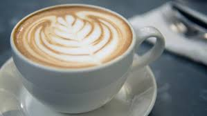
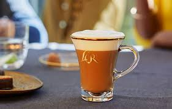

There is so many kind of coffees thet you can choos from. That has varying combinations of espresso, milk and flavorings of the drinks.
This is only warm coffee.
The history of coffee
In the 9th Century the innovation on the Ethiopian Plateau.a goat herder named Kaldi was the first person who discovered coffee beans and their benefits.
Kaldi noticed that after his goats ate the cherries of a particular tree in the ancient coffee forests of the Ethiopian plateau,
they were so full of energy that they didn't want to sleep at night.
15th-16th Centuries coffee culture
The business edition of coffee history began on the Arabian Peninsula, where people cultivated and traded coffee for the first time. By the 15th century,
coffee was being grown in what is now Yemen, and by the 16th century it gained popularity in what we now know as Iran, Egypt, Syria, and Turkey.
It was calld the wisdom in a cup.At this time, you could drink coffee at home, but you might also go to one of the many public coffee houses, or qahveh khaneh, that had started popping up in
cities across the region now referred to as the Middle East. At these thriving social hubs, you not only could sip your coffee and chat, but you could listen to music, watch performances,
play chess, and stay current on the news. In fact, coffee houses were so vital to the exchange of information at the time that they were also known as Schools of the Wise.
17th Century: Growth of Coffee Consumption in Europe
By the 17th century, coffee had made its way to Europe and was becoming popular across the continent.
A threat and a triumph
Not everyone embraced coffee right away. Some people reacted with suspicion and fear, even going so far as
to call it the “bitter invention of Satan.” When coffee came to Venice in 1615, local clergy condemned it, sparking a
controversy so great that Pope Clement VIII was asked to intervene. After tasting coffee for himself, he found it so satisfying
that he gave it papal approval.
20th-21st Centuries: Growing the Coffee Community in the U.S.
Coffee—and the way we drink it—has continued to evolve. In the 20th and 21st centuries, we’ve seen several “waves” of coffee that
represent both a type of coffee and an accompanying shift in coffee culture. The first wave of coffee arose as industrialization
allowed for mass production. This is the coffee that first hit the shelves of grocery stores, and it provided functionality and
convenience. Individuals, restaurants and other businesses could buy this coffee, sold in bulk and mostly pre-ground, and make it daily.
There was little focus on origin, and few people in the U.S. even realized coffee grows on trees!
The different types of coffee in a expresso
More about the coffees that we have in the world that is popular today.
Cuppuccino:
Equal parts espresso, steamed milk, and foamed milk.
Mocha:
Espresso with chocolate syrup or powder and steamed milk,
often topped with whipped cream and chocolate shavings.
Espresso:
A concentrated coffee made by forcing hot water through finely ground coffee beans.

Americano:
An Americano is an espresso that has extra water added to it. Americans typically drink a larger cup of lower-strength coffee, while Europeans drink small amounts of high-strength coffee, like an espresso.
Flat White:
There is only a small difference between a latte and a flat white. They are very similar drinks – steamed milk and espresso. The flat white is just slightly stronger than a latte. Usually a flat white comes in a smaller portion as well.
Latte:
A latte is similar to a cappuccino, but with more milk and only a thin layer of foam on the top. If you don't like strong coffee, you'll likely enjoy a latte.
Cortado:
A small cup of espresso with a small amount of steamed milk.
Macchiato:
Espresso with a small amount of milk foam or steamed milk.
Affogato:
Espresso poured over ice cream or gelato.

What does your coffee say about you?
What does you always order when you whant a coffee at a coffee shop.There are many different types of coffee drinks, with options ranging from simple black coffee to elaborate espresso-based
drinks with milk and flavors.
Macchiato
You like a littel drama. You're bold, confident, and probavly have a signture "look" that people recognize you for.
Caramel Macchiato
You're a little extra but in the best way. You love a good aesthetic, a sweet treat, and a perfectly layerd drink.
Cotado
You're all about balances. You like your coffee strong but smooth, and you have a low-key but effortlessly cool vibe.
Cappuccino
You're a classic with a touch of elegance. You appreciate the little things in life, like good conversation and perfectly frothed milk.
Americano
You're practical, efficient, and don't need any extra frills. You probably have a "no small talk" policy before your firts cup."
Flat White
You give off calmed, collected energy. You like things simple but high-quality, and your friends come to you for advice.
Affogato
You love indulgence and elive coffee should be an experience. You have great taste and probably a sweet tooth.
Mexican Mocha
You like a little spice in your life, literally and figuratively. You're bold, adventurous and not afraid to stand out.
Espresso Martini
You're the life of the party but still mean business. You love a good night out, appreciate a wll made drink, and somhow always look effortlessly put together.
Fun facts about coffee
Coffee is a fruit
Despite it being called a ‘bean’, coffee is actually a fruit.
The ‘beans’ grow on a bush and are found in the centre of a berry, known as a coffee cherry.
Brazil grows the most coffee in the world
It’s widely known that Brazil is one of the biggest coffee hotspots, but did you know it’s responsible for
around a third of all the coffee in the world? Brazil is the number one coffee producer, followed by Vietnam and Colombia.
Finland consumes the most coffee in the world
Where Brazil may grow the most, Finland drinks the most coffee! On average they drink 12kg per person,
per year which works out to an impressive 1,680 cups on average each a year. Now how’s that for a coffee fact?
Game Quiz
Fille in the questions.
What is your favourite coffe?
Coffee beans grow on?
An Americano is a ?
What's the first thing you do when you see a coffee shop ?
How mutch coffee do you drink a day ?
What's the most common way to say I need a coffee in the morning?
When do you drink coffee?
Do you like other foods or drinks when they are coffee flavored?